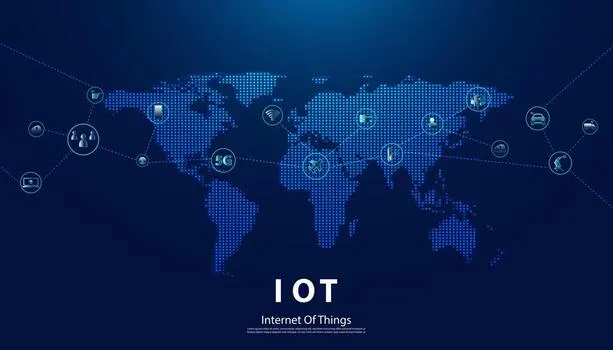

Sensar
El dispositivo mide temperatura, movimiento, humedad o cualquier otra variable física.
INTERNET DE LAS COSAS
Un sensor mide algo, lo envía por una red y un sistema responde sin que nadie toque un botón. Eso es el Internet de las Cosas: millones de objetos que escuchan su entorno y actúan en consecuencia.

El dispositivo mide temperatura, movimiento, humedad o cualquier otra variable física.
El dato viaja por Wi-Fi, Bluetooth o redes móviles hasta un servidor o la nube.
Un sistema analiza el dato y responde: enciende, apaga, alerta o ajusta algo automáticamente.
SIGUE EXPLORANDO